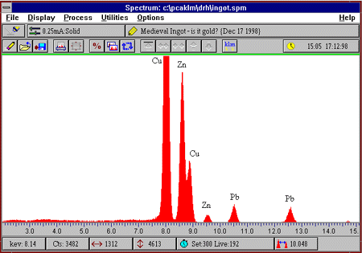

X-ray fluorescence is a technique of chemical analysis. It has been called 'the curator's dream instrument' because measurements are non-destructive and usually the whole object can be analysed, rather than a sample removed from one. The technique involves aiming an X-ray beam at the surface of an object; this beam is about 2 mm in diameter.

The interaction of X-rays with an object causes secondary (fluorescent) X-rays to be generated. Each element present in the object produces X-rays with different energies. These X-rays can be detected and displayed as a spectrum of intensity against energy: the positions of the peaks identify which elements are present and the peak heights identify how much of each element is present.
ED-XRF is accurate and fast (a result can be obtained in a few minutes), but it is not sensitive enough to measure low concentrations such as trace elements (i.e. those present at levels below about 0.1%). However, it will quickly determine the alloy composition of a metal artefact and it can also be used to analyse some non-metallic materials such as ceramics and glass. One limitation of the technique is that only a thin layer, less than 0.1mm, is actually analysed. This can sometimes give misleading results on corroded or plated metals unless the surface is cleaned.
If you want to find out more about XRF look up the following references.
Van Eriken, R.E, Markowicz, A.A. 1992. Handbook of x-ray spectrometry
Publisher: Marcel Decker
Cowell, M.R. 1998. Coin analysis by energy dispersive X-ray fluorescence
spectrometry (Eds W.A. Oddy and M.R. Cowell), Metallurgy
in Numismatics, vol. 4, Royal Numismatic Society, (London), 448-460.